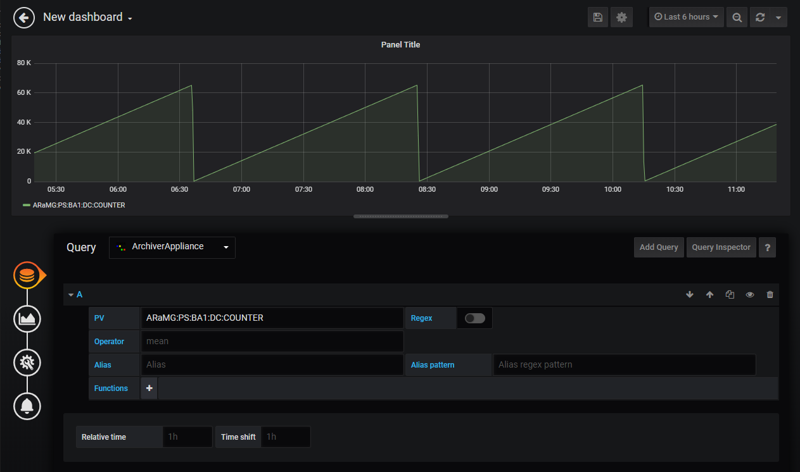
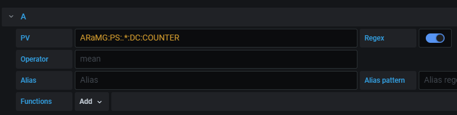
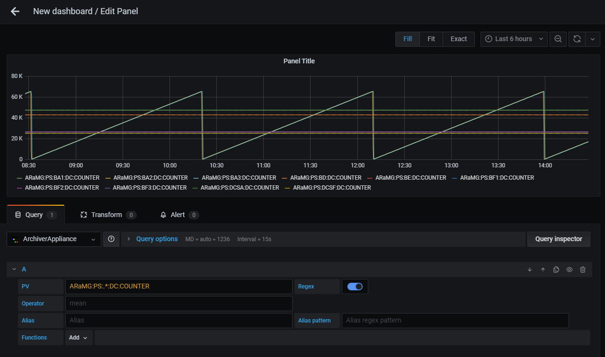
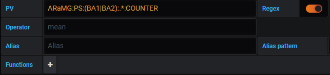
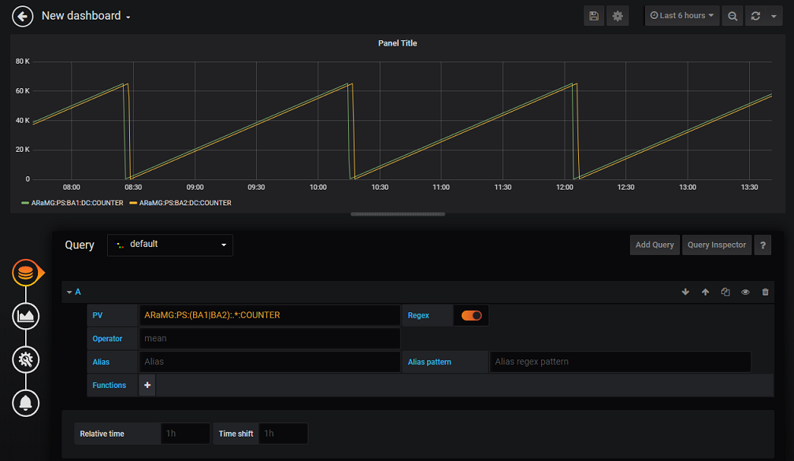
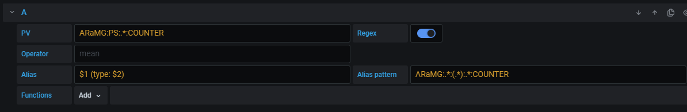
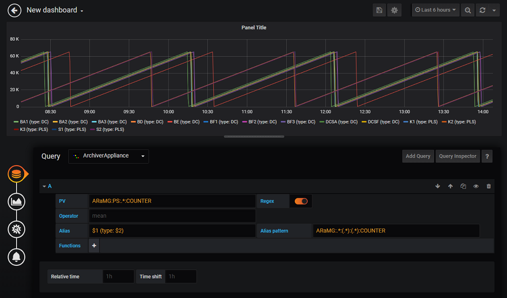

Query Edit¶
Overview¶

PV: set PV name to be visualized. It is allowed to set multiple PVs by using Regular Expressoins alternation pattern (e.g.
(PV:1|PV:2)).Regex: enable/disable Regex mode. Refer Select Multiple PVs by Regex.
Operator: controls processing of data during data retrieval (Default:
mean). Refer Archiver Appliance User Guide about processing of data. Special operatorrawis also available to retrieve the data without processing.Alias: set alias for legend.
Alias pattern: set regular expressoin pattern to use PV name for legend alias. Refer Legend Alias with Regex Pattern
Function: apply processing function for retrieved data. Refer Apply Processing Functions
PV Name Completion¶

Candidate PV names are shown during focussing on PV text input.
Note
Maximum number of candidate names is 100.
Select Multiple PVs by Regex¶
You can select multiple PVs using Regular Expressoins.
To enable Regex mode, click Regex button next to PV text input.
The plugin supports only wildcard pattern and alternation pattern.
Note
Maximum number of PVs you can select on Regex mode is 100 in default. maxNumPVs function is available to change maximum number.
Wildcard Pattern¶
Wildcard pattern (e.g. .*) is used to match any characters.
For example, PV:.* matches PV:1, PV:2, PV:ABC:1, PV:ABC:2. and PV:EFG:1.

Result of above query is shown below.

Alternation Pattern¶
Alternation pattern (e.g. (A|B|C)) is used to OR matching.
For example, PV:(ABC|EFG):.* matches PV:ABC:1, PV:ABC:2, and PV:EFG:1.

Result of above query is shown below.

Legend Alias with Regex Pattern¶
You can set legend alias using target PV name with Alias pattern.
Alias pattern is used to match PV name. Matched characters within parentheses can be used in
Alias text input like $1, $2, …, $n.
To escape characters, two backslashes is required before the characters (e.g. \\.).

Result of above query is shown below.

Apply Processing Functions¶
Functions are used to apply post processing to the data.
You can add, move and remove functions from Functions row.
Functions are categorized into some groups.
Select preffered functions from categoires.

Some functions require parameters. You can edit parameters after adding the function.
To see details of each function, refer Functions.

Note
Functions are applied from left to right.